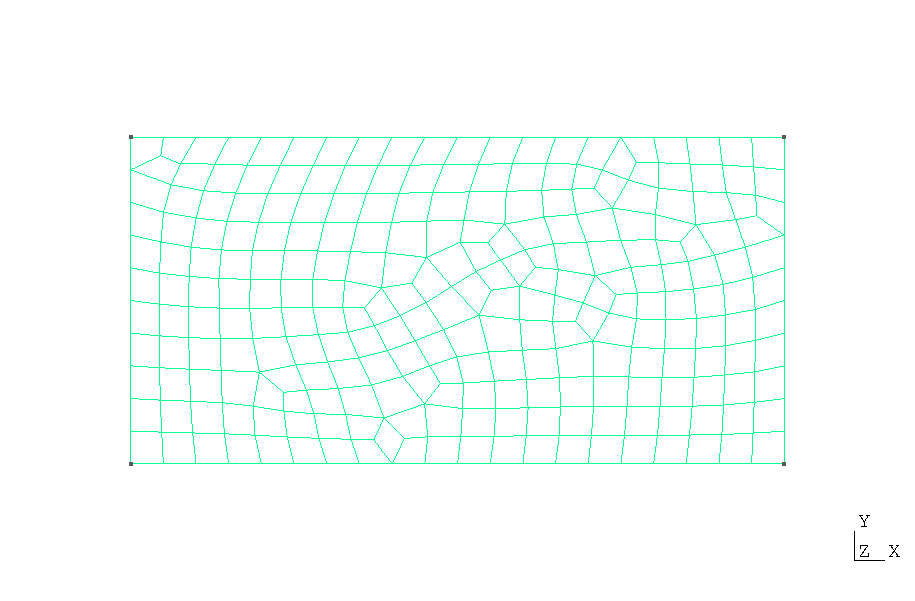

Heat Conduction in a 2D Fin Tutorial (Gmsh Mesh)
This page demonstrates solving the 2D heat conduction fin problem using a Gmsh-generated mesh.
Gmsh
 is a powerful mesh generation tool that can create complex geometries and meshes for finite element
analysis. For the mathematical formulation and theory, see the
basic tutorial.
is a powerful mesh generation tool that can create complex geometries and meshes for finite element
analysis. For the mathematical formulation and theory, see the
basic tutorial.
Gmsh File Import
This example demonstrates how to import a Gmsh-generated mesh (.msh file format) and solve
a heat conduction problem.
<body>
<!-- ...body region... -->
<script type="module">
// Import FEAScript library
import { FEAScriptModel, importGmshQuadTri, plotSolution, printVersion } from "https://core.feascript.com/dist/feascript.esm.js";
window.addEventListener("DOMContentLoaded", async () => {
// Print FEAScript version in the console
printVersion();
// Fetch the mesh file
const response = await fetch("./rect_quad_unstruct.msh"); // .msh version 4.1 is currently supported
if (!response.ok) {
throw new Error(`Failed to load mesh file: ${response.status} ${response.statusText}`);
}
const meshContent = await response.text();
// Create a File object with the actual content
const meshFile = new File([meshContent], "rect_quad_unstruct.msh");
// Create and configure model
const model = new FEAScriptModel();
model.setSolverConfig("heatConductionScript");
// Parse the mesh file
const result = await importGmshQuadTri(meshFile);
// Define mesh configuration with the parsed result
model.setMeshConfig({
parsedMesh: result,
meshDimension: "2D",
elementOrder: "quadratic",
});
// Apply boundary conditions using Gmsh physical group tags
model.addBoundaryCondition("0", ["constantTemp", 200]); // bottom boundary
model.addBoundaryCondition("1", ["constantTemp", 200]); // right boundary
model.addBoundaryCondition("2", ["convection", 1, 20]); // top boundary
model.addBoundaryCondition("3", ["symmetry"]); // left boundary
// Solve
model.setSolverMethod("lusolve");
const { solutionVector, nodesCoordinates } = model.solve();
// Plot results
plotSolution(
solutionVector,
nodesCoordinates,
model.solverConfig,
model.meshConfig.meshDimension,
"contour",
"resultsCanvas",
"unstructured" // Important: specify unstructured mesh type for Gmsh meshes
);
});
</script>
<!-- ... rest of body region... -->
</body>
Important notes about the Gmsh workflow:
-
Physical Groups in Gmsh: In your
.geo file (see
Example Gmsh .geo File), you need to define physical groups
for boundaries using commands like Physical Line("bottom") = {1};. These are mapped to
tags in the imported mesh.
-
Boundary Condition Mapping and Tag Indexing: When using Gmsh meshes in FEAScript, you
need to subtract 1 from the Gmsh physical group tag numbers. For example, if your Gmsh file has
physical groups with tags
"1", "2", "3", "4", you
would reference them in FEAScript as "0", "1", "2",
"3", respectively. For example:
model.addBoundaryCondition("0", ["constantTemp", 200]); // Gmsh physical group tag 1.
This conversion is necessary because Gmsh uses 1-based indexing while FEAScript uses 0-based indexing.
-
Unstructured Plotting: When plotting results from a Gmsh mesh, add the
"unstructured"
parameter to the plotSolution function to ensure correct visualization.
You can create your own Gmsh files by writing .geo scripts or using Gmsh's GUI. For this
example, we used a simple rectangular domain defined in a .geo file with specific physical
groups for each boundary.
Example Gmsh .geo File
Below is the rect.geo file used in this tutorial. It defines a 4 m × 2 m rectangular domain
with physical lines for each boundary edge:
// 2D Rectangle: 4m (width) x 2m (height) with physical lines for boundary labeling
lc = 0.7; // Characteristic length (mesh density)
// Points (x, y, z, mesh size)
Point(1) = {0, 0, 0, lc}; // Bottom left
Point(2) = {4, 0, 0, lc}; // Bottom right
Point(3) = {4, 2, 0, lc}; // Top right
Point(4) = {0, 2, 0, lc}; // Top left
// Lines
Line(1) = {1, 2}; // Bottom boundary
Line(2) = {2, 3}; // Right boundary
Line(3) = {3, 4}; // Top boundary
Line(4) = {4, 1}; // Left boundary
// Line Loop and Surface
Line Loop(1) = {1, 2, 3, 4};
Plane Surface(1) = {1};
// Physical Lines
Physical Line("bottom") = {1};
Physical Line("right") = {2};
Physical Line("top") = {3};
Physical Line("left") = {4};
// Physical Surface (optional, for FEM domains)
Physical Surface("domain") = {1};
// Generate 2D mesh
Recombine Surface{1}; // Turn triangle elements into quadrilaterals
Mesh.ElementOrder = 2; // Set quadratic elements
Mesh 2;
Note how the physical line tags in the .geo file correspond to the boundary conditions in
our FEAScript code:
-
Physical Line("bottom") = {1}; →
model.addBoundaryCondition("0", ["constantTemp", 200]);
-
Physical Line("right") = {2}; →
model.addBoundaryCondition("1", ["constantTemp", 200]);
-
Physical Line("top") = {3}; →
model.addBoundaryCondition("2", ["convection", 1, 20]);
-
Physical Line("left") = {4}; →
model.addBoundaryCondition("3", ["symmetry"]);
To generate a mesh file from this .geo script, you would run:
gmsh rect.geo -2 in your terminal, which creates a rect.msh file that can be
imported into FEAScript.
Generated Mesh
Below is a visualization of the quadrilateral mesh generated with Gmsh. The mesh consists of 30
elements.

Quadrilateral mesh (rect_quad_unstruct.msh) generated using the
rect.geo script with Gmsh
The unstructured mesh approach would be particularly advantageous for complex geometries, where the
mapped mesh approach could not be applied effectively.
Results
Below is the 2D contour plot of the computed temperature distribution. This plot is generated in real
time using FEAScript. Please note that solutions computed on unstructured meshes like this may exhibit
small numerical differences compared to solutions on structured orthogonal meshes. This occurs because
derivative calculations in non-orthogonal elements are inherently less precise due to the Jacobian
transformation process. These small differences are expected and acceptable for most engineering
applications, but may be noticeable in regions with steep temperature gradients.